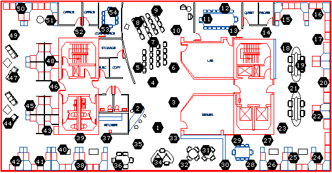

Your Course Project
Your class project is an opportunity for you to explore an interesting machine learning problem of your choice in the context of a real-world data set. Below, you will find some project ideas, but the best idea would be to combine machine learning with problems in your own research area. Your class project must be about new things you have done this semester, you can't use results you have developed in previous semesters.
Projects can be done by you as an individual, or in teams of two students. Each project will also be assigned a 701 instructor as a project consultant/mentor. They will consult with you on your ideas, but of course the final responsibility to define and execute an interesting piece of work is yours Your project will be worth 20% of your final class grade, and will have two final deliverables:
a writeup in the form of a NIPS paper (8 pages maximum in NIPS format, including references, this page limit is strict), due May 10, worth 60% of the project grade, and
a poster presenting your work for a special ML class poster session on May 4, 2-5pm in the NSH Atrium, worth 20% of the project grade.
In addition, you must turn in a midway progress report (5 pages maximum in NIPS format, including references) describing the results of your first experiments by April 16, worth 20% of the project grade. Note that, as with any conference, the page limits are strict! Papers over the limit will not be considered.
Project Proposal
You must
turn in a brief project proposal (1-page maximum) by March
21st. Read the list of available data sets and potential
project ideas below. You are encouraged to use one of these
data sets, because we know that they have been successfully used for
machine learning in the past. If you prefer to use a
different data set, we will consider your proposal, but you must have
access to this data already, and present a clear proposal for what you
would do with it.
Project proposal format: Proposals should be one page maximum. Include the following information:
Project title
Data set
Project idea. This should be approximately two paragraphs.
Software you will need to write.
Papers to read. Include 1-3 relevant papers. You will probably want to read at least one of them before submitting your proposal.
Teammate: will you have a teammate? If so, whom? Maximum team size is two students.
April 16 milestone: What will you complete by April 16? Experimental results of some kind are expected here.
Datasets and
project
suggestions: Below
are descriptions of several data sets, and some suggested
projects. The first few are spelled out in greater
detail. You are encouraged to select and flesh out one of
these projects, or make up you own well-specified project using these
datasets. If you have other data sets you would like to work
on, we would consider that as well, provided you already have access to
this data and a good idea of what to do with it.
This data
set contains a time series of images of brain activation, measured
using fMRI, with one image every 500 msec. During this time, human
subjects performed 40 trials of a sentence-picture comparison task
(reading a sentence, observing a picture, and determining whether the
sentence correctly described the picture). Each of the 40 trials lasts
approximately 30 seconds. Each image contains approximately 5,000
voxels (3D pixels), across a large portion of the brain. Data is
available for 12 different human subjects.
Available
software: we can provide
Matlab software for reading the data, manipulating and visualizing it,
and for training some types of classifiers (Gassian Naive Bayes, SVM).
Project
A1:
Bayes network classifiers for fMRI
Project
idea: Gaussian Naïve
Bayes classifiers and SVMs have been used with this data to predict
when the subject was reading a sentence versus perceiving a picture.
Both of these classify 8-second windows of data into these two classes,
achieving around 85% classification accuracy [Mitchell et al, 2004].
This project will explore going beyond the Gaussian Naïve
Bayes classifier (which assumes voxel activities are conditionally
independent), by training a Bayes network in particular a TAN tree
[Friedman, et al., 1997]. Issues youll need to confront include which
features to include (5000 voxels times 8 seconds of images is a lot of
features) for classifier input, whether to train brain-specific or
brain-independent classifiers, and a number of issues about efficient
computation with this fairly large data set. Midpoint milestone: By
April 12 you should have run at least one classification algorithm on
this data and measured its accuracy using a cross validation test. This
will put you in a good position to explore refinements of the
algorithm, alternative feature encodings for the data, or competing
algorithms, by the end of the semester. Project: Reducing
dimensionality and classification accuracy.
Papers
to read: "Learning to Decode Cognitive States
from Brain Images," Mitchell et
al., 2004, "Bayesian Network Classifiers"
Friedman et al., 1997.
Project
A2: Dimensionality reduction
for fMRI data
Project
idea: Explore the
use of dimensionality-reduction methods to improve classification
accuracy with this data. Given the extremely high dimension
of the input (5000 voxels times 8 images) to the classifier, it is
sensible to explore methods for reducing this to a small number of
dimension. For example, consider PCA, hidden layers of neural nets, or
other relevant dimensionality reducing methods. PCA is an
example of a method that finds lower dimension representations that minimize error in
reconstructing the data.
In contract, neural network hidden layes are lower dimensional
representations of the inputs that minimize
classification
error (but only find a local
minimum). Does one of these work better? Does it
depend on parameters such as the number of training examples?
Papers
to read: "Learning to Decode Cognitive States
from Brain Images," Mitchell et
al., 2004, papers and textbook on PCA, neural nets, or whatever you
propose to try.
Project
A3: Feature
selection/feature invention for fMRI classification.
Project
idea:
As
in many high dimensional data sets, automatic selection of a subset of
features can have a strong positive impact on classifier
accuracy. We have found that selecting features by the
difference in their activity when the subject performs the task,
relative to their activity while the subject is resting, is one useful
strategy [Mitchell et al., 2004]. In this project you could
suggest, implement, and test alternative feature selection strategies
(eg., consider the incremental value of adding a new feature
to the current feature set, instead of scoring each feature independent
of other features that are being selected), and see whether you can
obtain higher classification accuracies.
Alternatively, you could consider methods for synthesizing new features
(e.g., define the 'smoothed value' of a voxel in terms of a spatial
Gaussian kernel function applied to it and its neighbors, or define
features by averaging voxels whose time series are highly correlated).
Papers
to read: "Learning to Decode Cognitive States
from Brain Images," Mitchell et
al., 2004, papers on feature selection
Optical character recognition, and the simpler digit recognition task, has been the focus of much ML research. We have two datasets on this topic. The first tackles the more general OCR task, on a small vocabulary of words: (Note that the first letter of each word was removed, since these were capital letters that would make the task harder for you.)
http://ai.stanford.edu/~btaskar/ocr/
The second dataset is the now "classic" digit recognition task for outgoing mail zip codes:
http://yann.lecun.com/exdb/mnist/
Project suggestions:
Learn a classifier to recognize the letter/digit
Use an HMM to exploit correlations between neighboring letters in the general OCR case to improve accuracy. (Since ZIP codes don't have such constraints between neighboring digits, HMMs will probably not help in the digit case.)
Apply a clustering/dimensionality reduction algorithm on this data, see if you get better classification on this lower dimensional space.
The goal is to segment images in a meaningful way. Berkeley
collected three hundred images and paid students to hand-segment each
one (usually each image has multiple
hand-segmentations). Two-hundred of these images
are training images, and the remaining 100 are test images.
The dataset includes code for reading the images and ground-truth
labels, computing the benchmark scores, and some other utility
functions. It also includes code for a segmentation
example. This dataset is new and the problem unsolved, so
there is a chance that you could come up with the leading algorithm for
your project.
http://www.cs.berkeley.edu
Project
ideas:
Project B1:
Region-Based Segmentation
Most segmentation algorithms have focused on segmentation based on
edges or based on discontinuity of color and texture. The
ground-truth in this dataset, however, allows supervised learning
algorithms to segment the images based on statistics calculated over
regions. One way to do this is to "oversegment" the image
into superpixels (Felzenszwalb 2004, code available) and merge the
superpixels into larger segments. Come up with a set of
features to represent the superpixels (probably based on color and
texture), a classifier/regression algorithm (suggestion: boosted
decision trees) that allows you to estimate the likelihood that two
superpixels are in the same segment, and an algorithm for segmentation
based on those pairwise likelihoods. Since this project idea is fairly
time-consuming focusing on a specific part of the project may also be
acceptable.
Milestone:
By April 12, you should be able to estimate the likelihood that two
superpixels are in the same segment and have a quantitative measure of
how good your estimator is. You should also have an outline
of how to use the likelihood estimates to form the final
segmentation. The rest of the project will involve improving
your likelihood estimation and your grouping algorithm, and in
generating final results.
Papers
to read: Some segmentation
papers from Berkeley are available here
Project B2:
Supervised vs. Unsupervised Segmentation Methods
Write two segmentation algorithms (these may be simpler than the one
above): a supervised method (such as logistic regression) and an
unsupervised method (such as K-means). Compare the results of the two
algorithms. For your write-up, describe the two classification methods
that you plan to use.
Milestone:
By April 12, you should have completed at least one of your
segmentation algorithms and have results for that algorithm.
Papers
to read: Some segmentation
papers from Berkeley are available here
The Caltech 256 dataset contains images of 256 object categories
taken at varying orientations, varying lighting conditions, and with
different backgrounds.
http://www.vision.caltech.edu/Image_Datasets/Caltech256/
Project
ideas:
You can try to create an object recognition system which can identify which object category is the best match for a given test image.
Apply clustering to learn object categories without supervision
This
dataset contains 640 images of faces. The faces themselves
are images of 20 former Machine Learning students and
instructors, with about 32 images of each person. Images vary
by the pose (direction the person is looking), expression (happy/sad),
face jewelry (sun glasses or not), etc. This gives you a
chance to consider a variety of classification problems ranging from
person identification to sunglass detection. The data,
documentation, and associated code are available here.
Available
software: The same website
provides an implementation of a neural network classifier for this
image data. The code is quite robust, and pretty well
documented in an associated homework assignment.
Project
ideas:
Try SVM's on this data, and compare their performance to that of the provided neural networks
Apply a clustering algorithm to find "similar" faces

Using this 54-node sensor network deployment, we collected temperature, humidity, and light data, along with the voltage level of the batteries at each node. The data was collected every 30 seconds, starting around 1am on February 28th 2004.
http://www-2.cs.cmu.edu/~guestrin/Research/Data/
This is a "real" dataset, with lots of missing data, noise, and failed sensors giving outlier values, especially when battery levels are low.
Project ideas:
Compare regression algorithms
Detect failed sensors
Learn graphical models representing the correlations between measurements at different nodes
Develop new distributed algorithms for solving a learning task on this data
Papers:
http://www-2.cs.cmu.edu/~guestrin/Publications/IPSN2004/ipsn2004.pdf
http://www-2.cs.cmu.edu/~guestrin/Publications/VLDB04/vldb04.pdf
This dataset has includes 45 years of daily precipitation data from the Northwest of the US:
http://www.jisao.washington
Project ideas:
Weather prediction: Learn a probabilistic model to predict rain levels
Sensor selection: Where should you place sensor to best predict rain
The Netflix Prize data set gives 100 million records of the form "user X rated movie Y a 4.0 on 2/12/05". The data is available here: Netflix Prize
The Enron E-mail data set contains about 500,000 e-mails from about 150 users.
The data set is available here: Enron Data
This data
set contains 1000 text articles posted to each of 20 online newgroups,
for a total of 20,000 articles. For documentation and
download, see this website.
This data is useful for a variety of text classification and/or
clustering projects. The "label" of each article is which of
the 20 newsgroups it belongs to. The newsgroups (labels) are
hierarchically organized (e.g., "sports", "hockey").
Available
software: The same website
provides an implementation of a Naive Bayes classifier for this text
data. The code is quite robust, and some documentation is
available, but it is difficult code to modify.
Project
ideas:
EM for
text classification in the case where you have labels for some
documents, but not for others (see McCallum et al, and come
up with your own suggestions)
Make up your own text learning problem/approach
Papers:
This dataset contains webpages from 4 universities, labeled with whether they are professor, student, project, or other pages.
http://www-2.cs.cmu.edu/~webkb/
Project ideas:
Can you learn classifiers to predict the type of a webpage from the text?
Can you improve accuracy by exploiting correlations between pages that point to each other?
Papers:
There are many other datasets out there. UC Irvine has a repository that could be useful for you project:
http://www.ics.uci.edu/~mlearn/MLRepository.html
Sam Roweis also has a link to several datasets out there:
http://www.cs.toronto.edu/~roweis/data.html